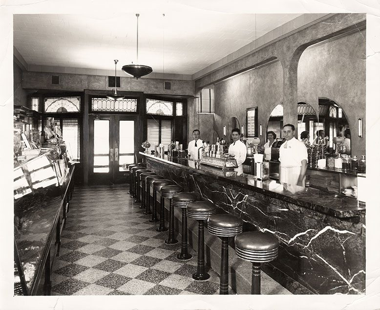

🏠 Sweet Life's History 🏠
Founded in 1944 during world war I, Sweet life has been serving the amazing icecream dessert for more than 60 years. Sweet life was founded by brothers Alba Lino & Alba Linkoin, started from a road side stall who serves cheap eats that everyone loves.
In those war-torn times, amidst uncertainty and challenges, the brothers decided to bring a bit of joy to the lives of people. They set up a modest roadside stall, offering not only a delightful escape from the harsh realities of the war but also serving up affordable and delectable treats that captured the hearts of everyone who tasted them.
Sweet Life's ice cream quickly became a beacon of happiness, a small indulgence that provided comfort and joy to those who savored its flavors. What started as a humble stall soon transformed into a beloved establishment as the word spread about the irresistible ice cream served by the Alba brothers.
The brothers' commitment to quality and innovation became the cornerstone of Sweet Life's success. Each scoop of their ice cream was crafted with passion and creativity, delighting customers with unique and mouthwatering combinations. The small roadside stall grew into a symbol of resilience and the pursuit of sweetness, even in the face of adversity.
As the years passed, Sweet Life expanded its reach far beyond its humble beginnings. It evolved into the most well-known ice cream brand, with over 600 outlets scattered across the globe. The legacy of Alba Lino and Alba Linkoin continued to thrive, carried forward by generations who shared a common love for the simple joy that a scoop of Sweet Life's ice cream could bring.